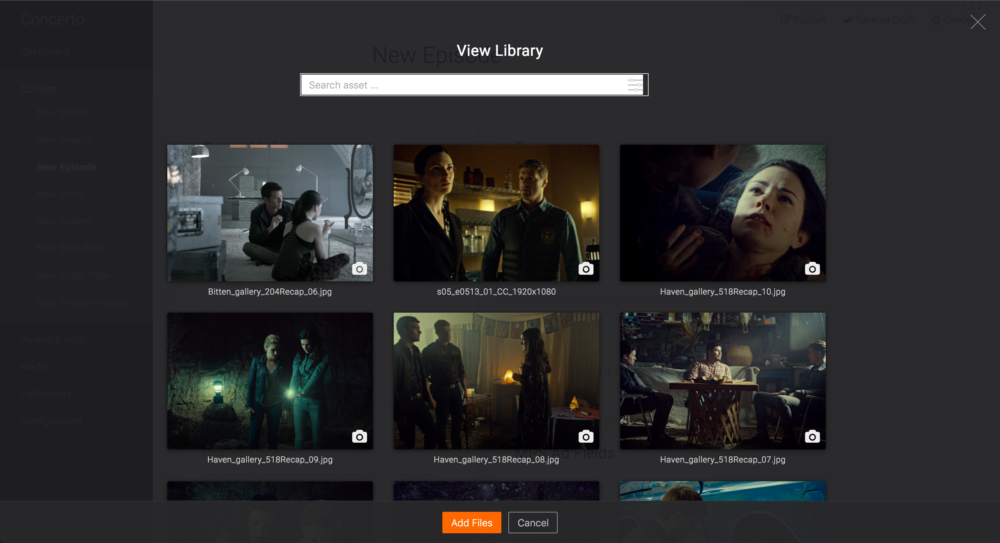

A grid list is best for presenting homogenous data and optimized for visual comprehension and differentiating between similar data types.
A grid list consists of a repeated pattern of cells laid vertically and horizontally within the grid list. Tiles hold content and can span one or more cells vertically or horizontally.
Use case: View library overlay

Asset Library Overlay on episodes page